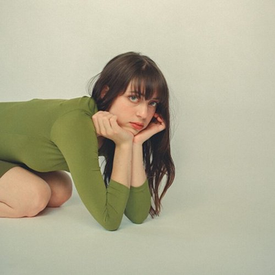
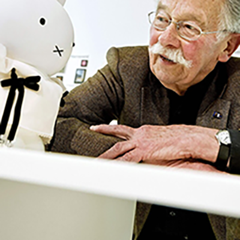
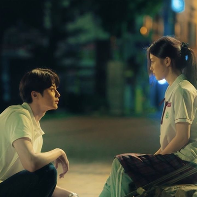

music

As of lately, Lizzy McAlpine has been on repeat for me. I absolutely love her style in composing lyrics
as
well as how she has her music produced. My favorite of her songs are "Staying", "Vortex", and "To The
Mountains." I tend to gravitate towards her acoustics and ballads that feature her guitar playing.
design

Dick Bruna is a designer from the Netherlands. He's known for his picture books and most especially known
for his
creation, Miffy. His simple and minimalistic designs are inspiring to me because they show that a
design, as
simple as a bunny, can be strong and impactful to society. I also really enjoy the color palette he
chooses to
apply to his designs, they're very youthful and bright. It's satisfying to look at.
film

20th Century Girl is South Korean coming-of-age film set in 1999. It's one of my favorite romance movies
because
of where it's set in and also how the story develops and builds up to the unexpected. I most especially
gravitate towards the way it was filmed, the warm color grading, and the harmony of it all. I look to
this film
for video inspiration as well as film-photography inspiration.